Fedora 配置指南#
Note
本节内容适用于 Fedora 42 Workstation，不一定适用于其他 Fedora 版本。 建议用户访问 Fedora 官网 下载并安装 Fedora 最新版本，也欢迎用户帮助我们更新本文以适配 Fedora 最新版本。
安装系统#
下载系统镜像#
访问 Fedora 官网 并下载 Fedora Workstation 镜像文件， 一般选择 x86_64 版本。
Fedora 42 Workstation x86_64 的 ISO 镜像文件（约 2.23 GB）下载链接：
制作 USB 启动盘#
Warning
制作 USB 启动盘时会格式化 U 盘！请确保 U 盘中无重要文件！
准备一个 4 GB 以上容量的 U 盘，并使用 Ventoy 制作 USB 启动盘。 Ventoy 可以在 Windows 和 Linux 下使用，详细用法见 官方文档。 下面以图解形式演示如何在 Windows 下使用 Ventoy 制作 USB 启动盘。
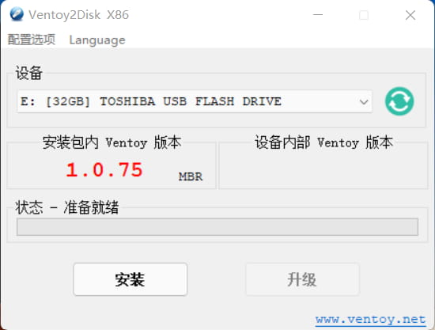
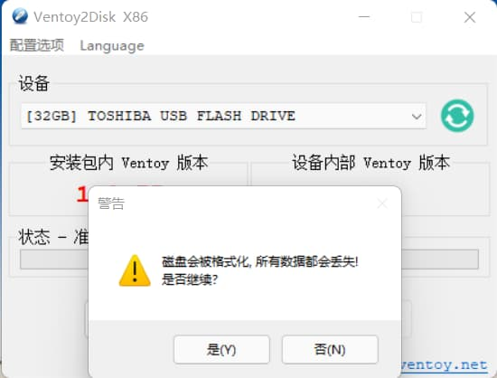
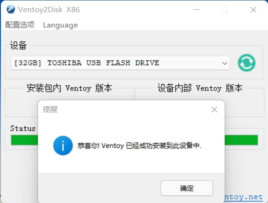
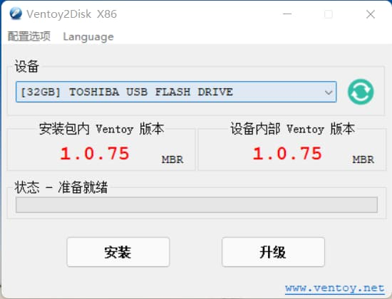
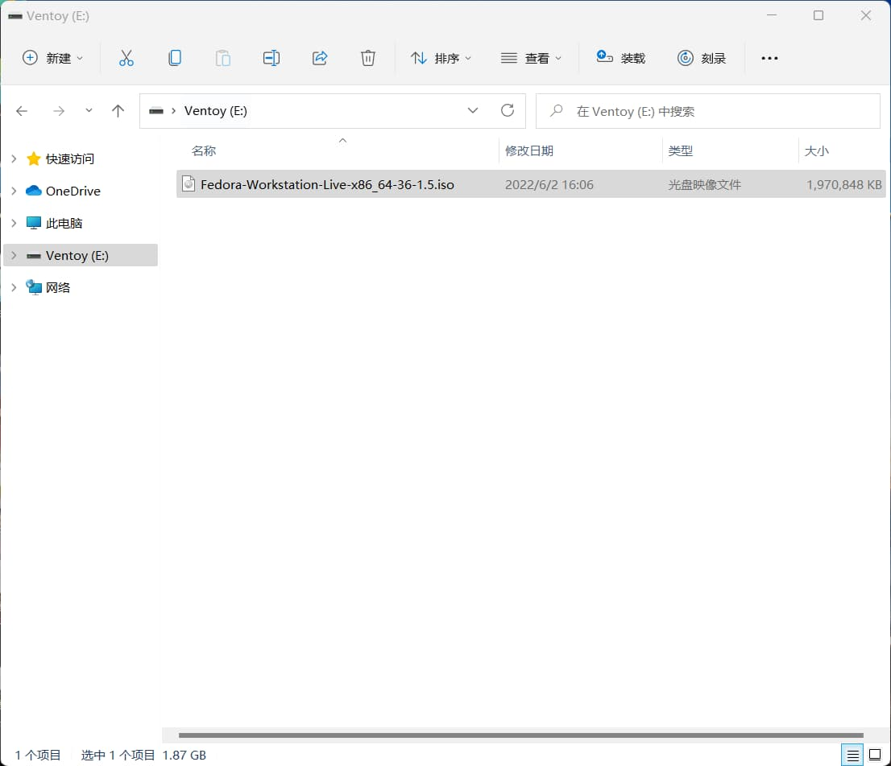
从 Ventoy 下载页面 下载 Ventoy 软件包。 解压后，执行其中的
Ventoy2Disk.exe程序，程序启动后界面如图 1 所示。 Ventoy 程序自动找到了用于制作启动盘的 32 GB U 盘点击“安装”会将 Ventoy 安装到 U 盘中，此时 U 盘会被格式化。请务必确保选中的是 目标 U 盘，且 U 盘中无其它重要文件
Ventoy 成功安装后，会弹出成功安装的对话框，点击确定
Ventoy 界面显示，安装包内 Ventoy 版本和设备内部 Ventoy 版本相同，表明 USB 启动盘制作成功
退出 Ventoy2Disk 程序。在“我的电脑”中找到名为 Ventoy 的 U 盘，并将已下载好的 Linux ISO 镜像文件复制到 U 盘中即可
进入 Live 系统#
将制作好的 USB 启动盘插入要安装 Fedora 系统的计算机上，开机启动， 按下 F10 或 F12 进入 BIOS，并使计算机优先从 USB 盘启动。 正确启动后，则会进入系统启动引导程序，按向上向下键选中“Start Fedora-Workstation-Live 42” 以进入 Fedora 的 Live 系统。
Note
Live 系统是指安装在 USB 启动盘中的操作系统。用户可以在 Live 系统中进行 任何操作以体验该系统。
Tip
不同型号的电脑进入 BIOS 的方法可能不同，请自行查询。
若计算机无法从 USB 盘启动，则可能是由于计算机的“安全启动”设置导致的， 可以尝试进入 BIOS 设置，并在 BIOS 设置内关闭“安全启动”。
如果尝试多次都无法正确从 USB 启动，则可能是 USB 启动盘制作失败，请尝试重新制作启动盘。
开始安装#
Warning
以下安装步骤假定用户想要将 Fedora 系统作为电脑的唯一系统， 电脑中原有的 Windows 或其它 Linux 系统会被彻底覆盖。 如果用户想要安装双系统（即同时安装 Windows + Linux），请参考网络上的 其他文档。
读者可参考下面的图解步骤和对应的说明安装操作系统（图解步骤是基于 Fedora 36 的， 但同样适用于 Fedora 42）。
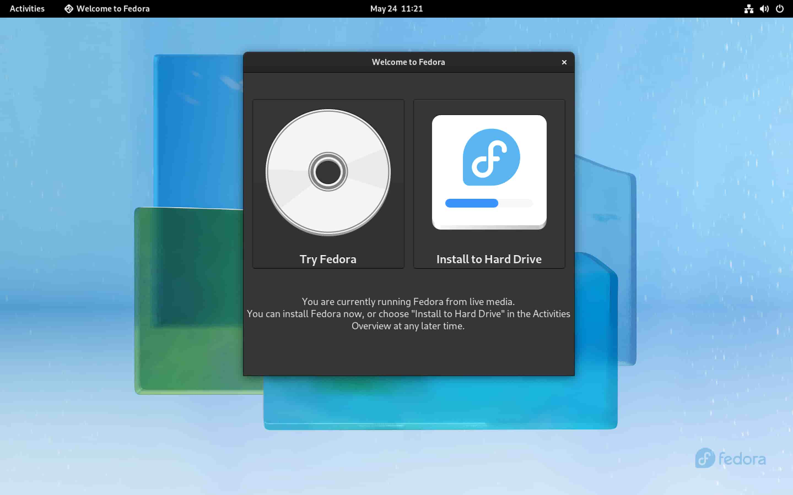
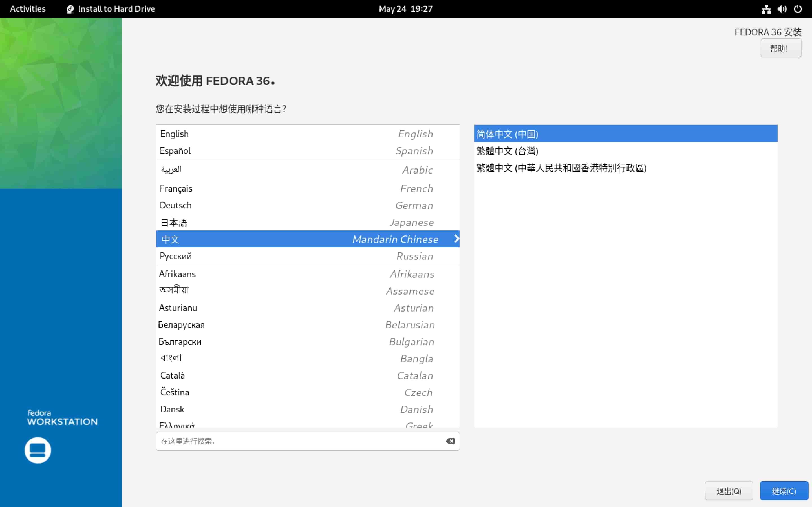
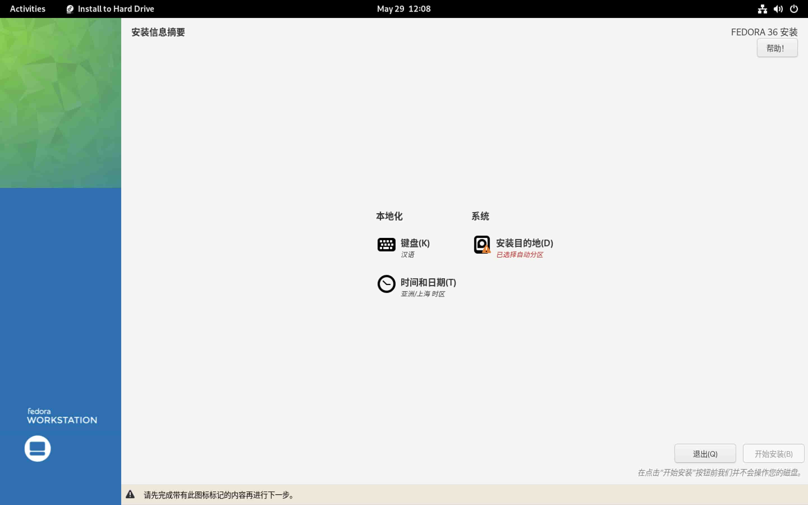

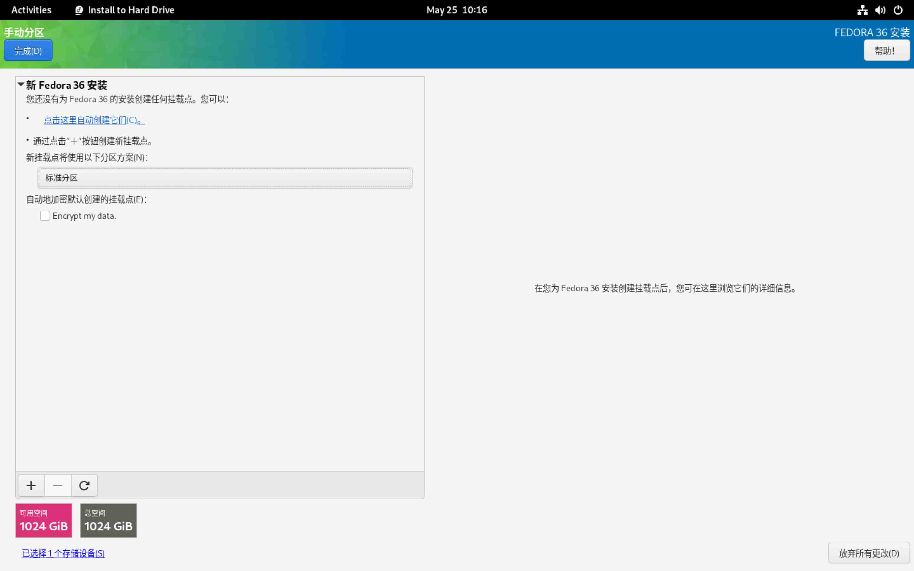
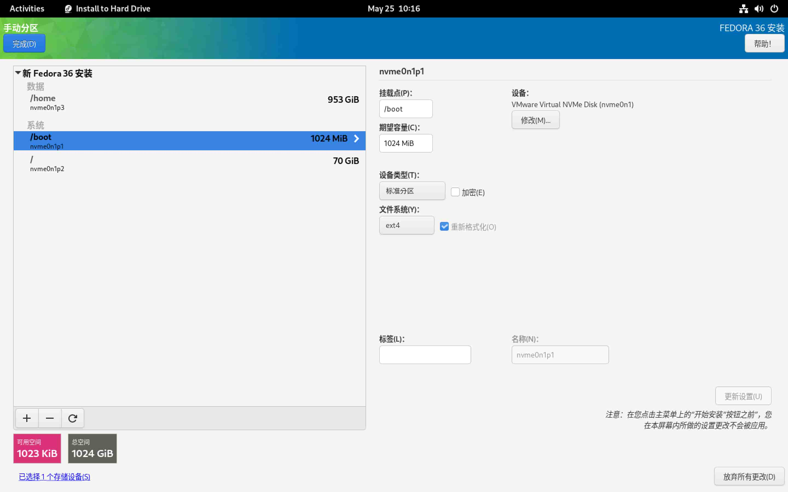
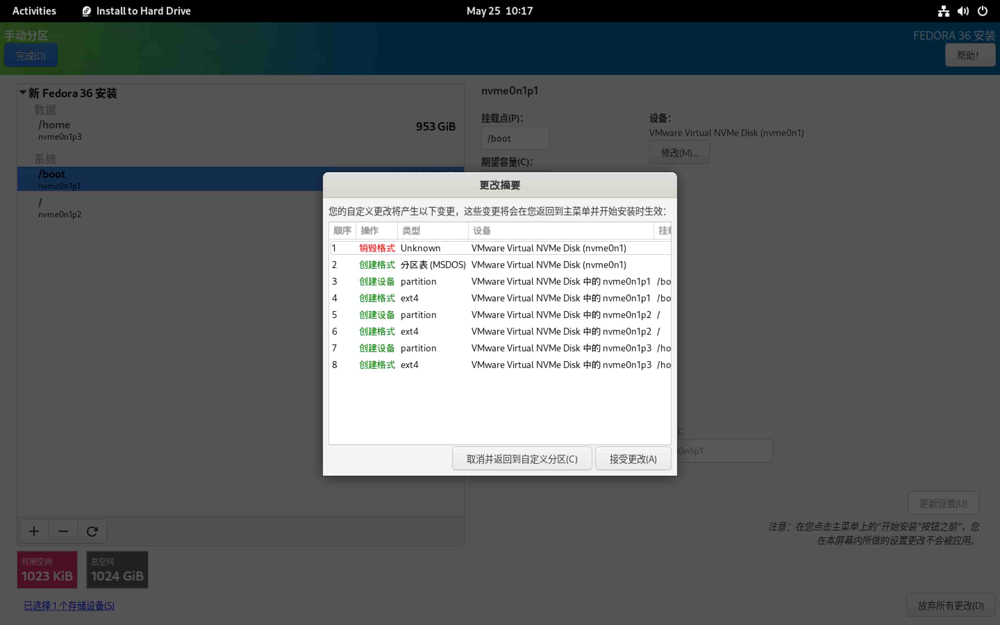
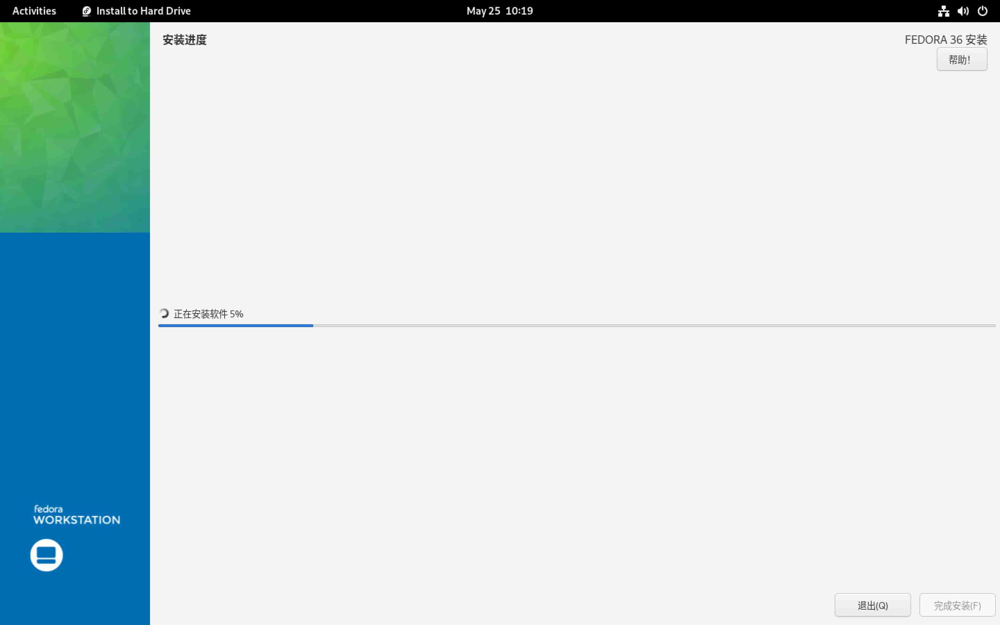
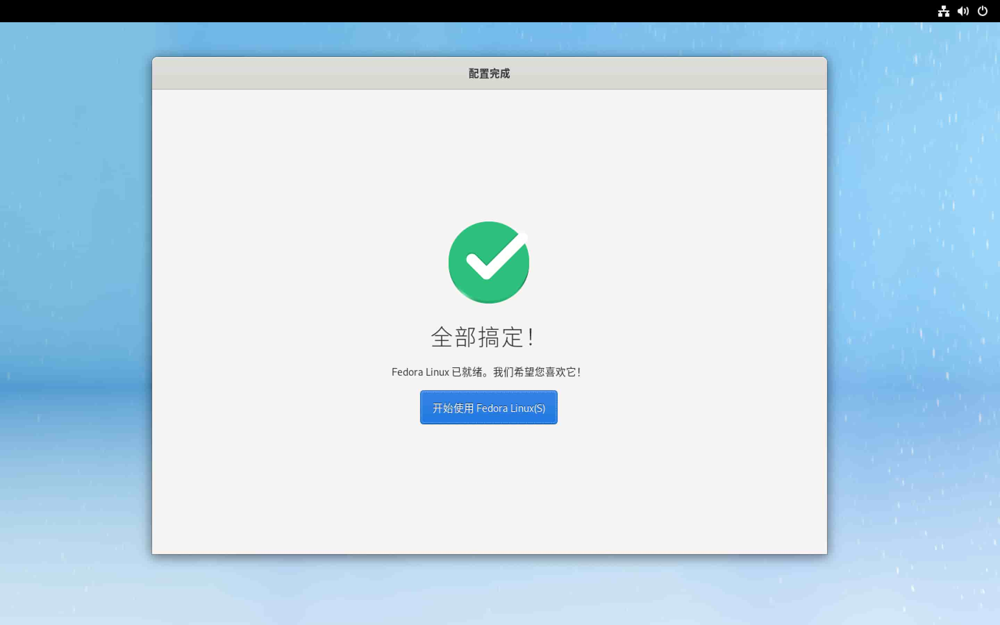
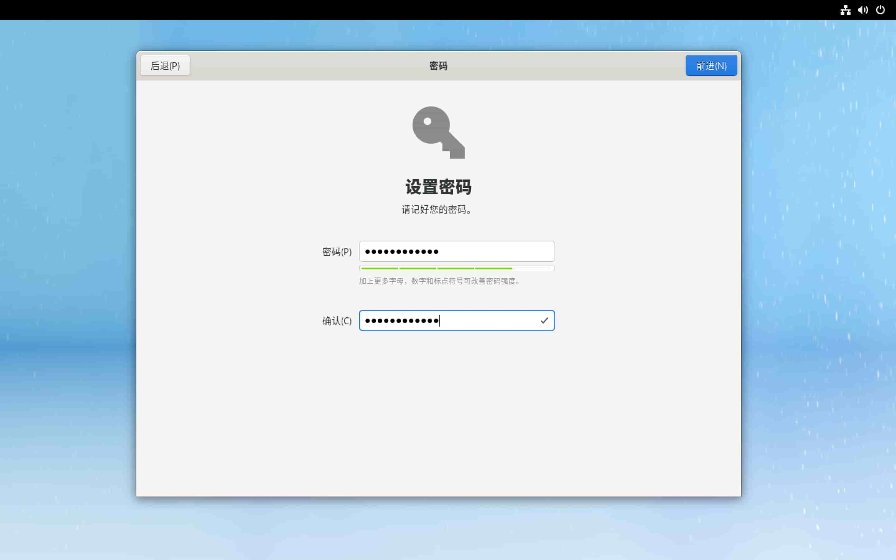
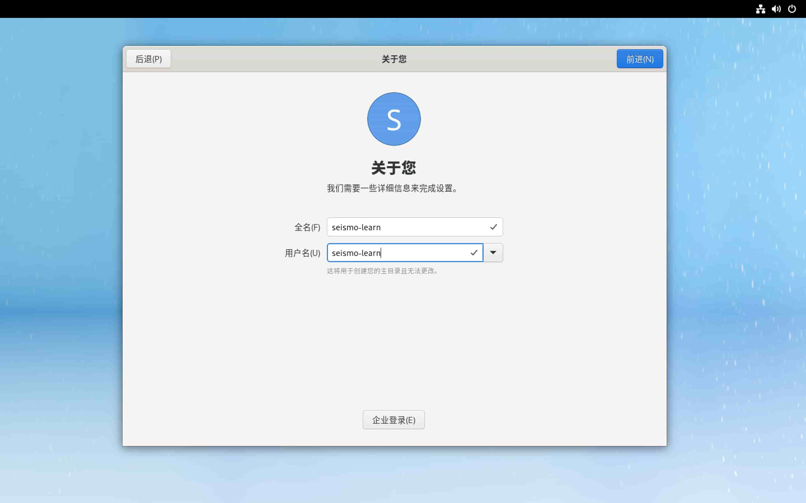
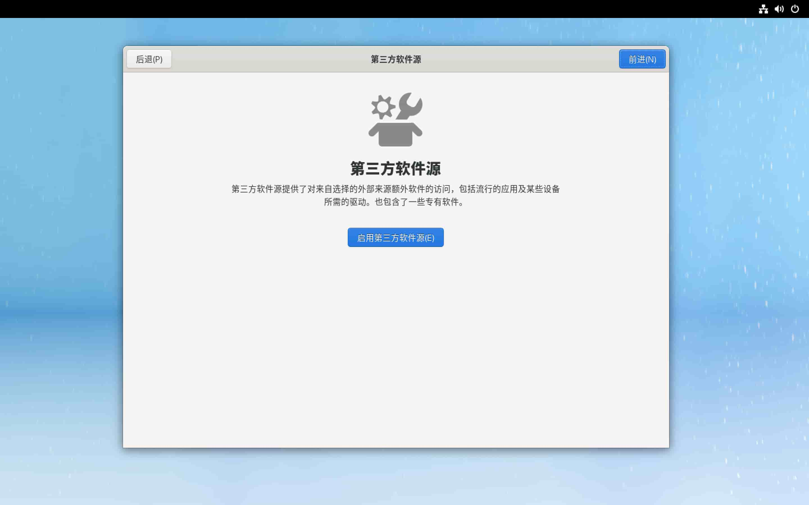
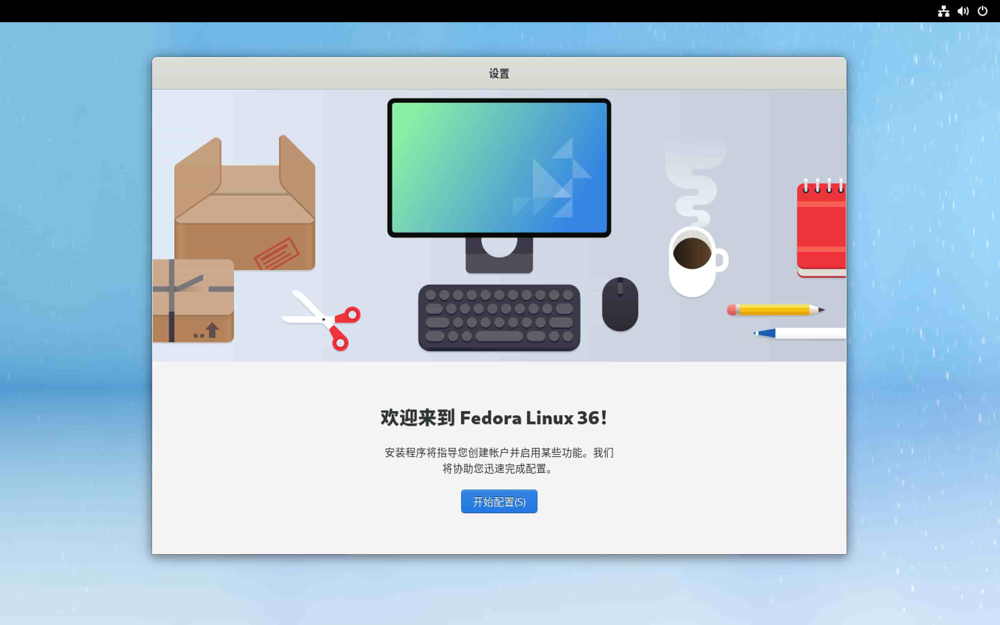
进入 Live 系统后，选择 “Install to Hard Drive” 以启动安装程序
选择安装过程中使用的语言。可以选择“中文”→“简体中文（中国）” 或 “English”→“English (Unite States)”。选择完毕后点击下方的“继续”按钮进入下一步
“安装信息摘要”界面，有三个设置项，可分别设置键盘布局、日期与时间以及要 安装系统的硬盘及分区。键盘布局、日期与时间都有默认值，一般无需修改
选择“安装目的地”，进入系统硬盘和分区的设置页面。在“设备选择”中，选择要将系统 安装到哪个硬盘。如果计算机有多个硬盘，可以将多个硬盘都选中，被选中的硬盘会有 一个“对号”符号。需要注意，不要选中 USB 启动盘对应的 U 盘。在“存储设置”中，可以 选择“自动”让安装程序进行自动分区，也可以选择“自定义”以人工设置分区。本教程中 选择更灵活的“自定义”分区方式
在“手动分区”页面，分区方案选择“标准分区”，然后点击“点击这里自动创建它们”， 以自动创建分区
系统一般会创建三个分区，
/（根分区）、/boot（boot 分区）和/home（Home 分区）。 不了解 Linux 的用户可以直接点击“完成”按钮。有一定 Linux 基础知识且有特定 需求的用户，可以在自动分区的基础上进一步新增分区或修改分区的硬盘大小， 修改完成后点击“完成”按钮即可点击“完成”按钮后会弹出“分区更改摘要”对话框，点击“接受更改”则系统会对硬盘 进行分区操作
分区结束后点击“完成”按钮，则回到图 3 所示的“安装信息摘要”界面。点击“开始安装” 按钮即进入正式安装的过程。等待安装完成，点击“完成安装”，并重启计算机。 重启计算机时，记得拔出 USB 启动盘，以免计算机在重启后再次进入 Live 系统。
重启计算机后，会看到如图 9 所示的欢迎界面
设置用户密码
设置账户名称。注意用户名只能是英文
启用第三方软件源，以便可以直接安装更多的软件
配置完成。开始使用 Fedora 系统
更新系统#
当已安装的软件有可用的更新，或 Fedora 系统可升级至新版本时， Fedora 会弹出提醒通知。建议用户及时更新系统及已安装的软件。
Warning
更新系统前，特别是大版本更新（如 Fedora 41 更新为 Fedora 42），最好先进行一次备份 （可以参考数据备份）。
Note
本节接下来介绍的大部分软件都通过命令行安装。在桌面或菜单栏中找到并点击“Terminal” 图标以 启动终端，然后在终端中输入命令并按下 Enter 键即可执行相应的命令。
系统软件#
Fedora 系统自带了“软件中心”，可用于查找、安装、卸载和管理软件包，但一般建议使用
命令行工具 dnf 安装和管理软件。
Note
dnf 会从 Fedora 软件源下载软件包。
国内用户可以参考 http://mirrors.ustc.edu.cn/help/fedora.html 将默认软件源镜像
替换为中科大镜像，以加快软件下载速度。
注意：在替换软件源镜像后要执行 sudo dnf makecache 更新本地缓存的软件包元数据。
dnf 的详细用法请阅读 dnf 参考文档，
这里只介绍一些常用命令:
# 更新本地软件包元数据缓存
$ sudo dnf makecache
# 检查并升级所有已经安装的软件
$ sudo dnf upgrade
# 检查并升级某软件
$ sudo dnf upgrade xxx
# 搜索软件
$ dnf search xxx
# 安装软件
$ sudo dnf install xxx
# 卸载软件
$ sudo dnf remove xxx
Tip
Linux 用户也可以访问 https://pkgs.org/ 网站查询软件包。 该网站支持多种 Linux 发行版和多个官方及第三方软件仓库， 且为每个软件包提供了丰富的元信息、依赖和被依赖关系、包含的文件、 安装方式以及更新历史等信息。
编程开发环境#
C/C++#
GCC 系列的 C/C++ 编译器是 Linux 下最常用的
C/C++ 编译器，其提供了 gcc 和 g++ 命令:
$ sudo dnf install gcc gcc-c++
Fortran#
GNU Fortran 编译器是 Linux 下最常用的
Fortran 编译器，其提供了 gfortran 命令:
$ sudo dnf install gcc-gfortran
Java#
运行 Java 程序需要安装 Java 运行环境，即 OpenJDK：
$ sudo dnf install java-latest-openjdk
git#
git 是目前最流行的版本控制工具，推荐在科研过程中 使用 git 管理自己编写的代码和文件。一般情况下系统已经安装了该软件。如果没安装， 可以使用如下命令安装:
$ sudo dnf install git